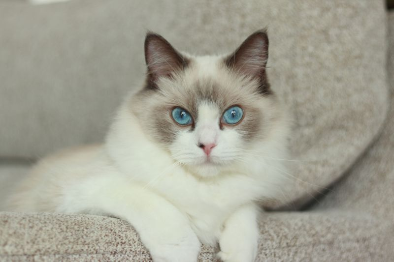

ラグドール

- 品種
- ラグドール
- 性格
-
非常に穏やか
抱っこを嫌がらない
のんびりしている - 鳴く頻度
-
とても少なめ
静かな声で鳴く
基本的におとなしい - 平均体重
- 4〜7kg
- 平均寿命
- 12〜15年
- 名前の由来
- 抱っこするとぬいぐるみのように脱力することから
ラグドールの特徴
ラグドールは、 非常に穏やかな性格で知られる猫種です。
抱っこされると力を抜くことが多く、 人とのスキンシップを好みます。
動きはゆったりとしており、 落ち着いた家庭環境に向いています。
体は大きめですが性格はやさしく、 初心者にも飼いやすい猫です。
静かな時間を一緒に過ごしたい人に、 とても相性の良い猫です。